tcad, yerli olarak geliştirilen, 2 boyutlu bir CAD/CAM yazılımıdır. Proje 2015 yılında kuyumculuk sektöründe 2.5D takımyolu ile çalışabilen masaüstü cnc tezgahlarına uygulanmak üzere başladı. Mevcut halde test sürümü ortaya çıkmıştır ve geliştirme çalışmaları devam etmektedir.
Galeri
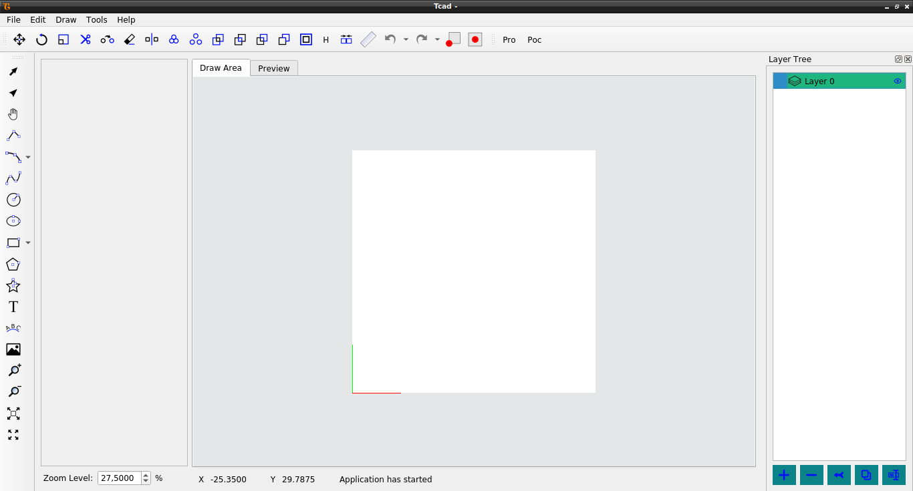 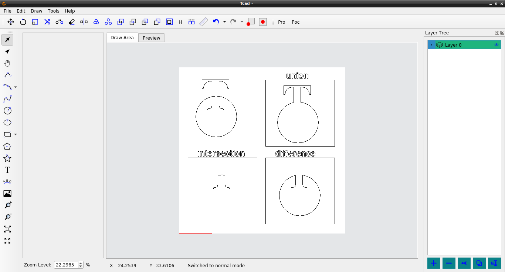 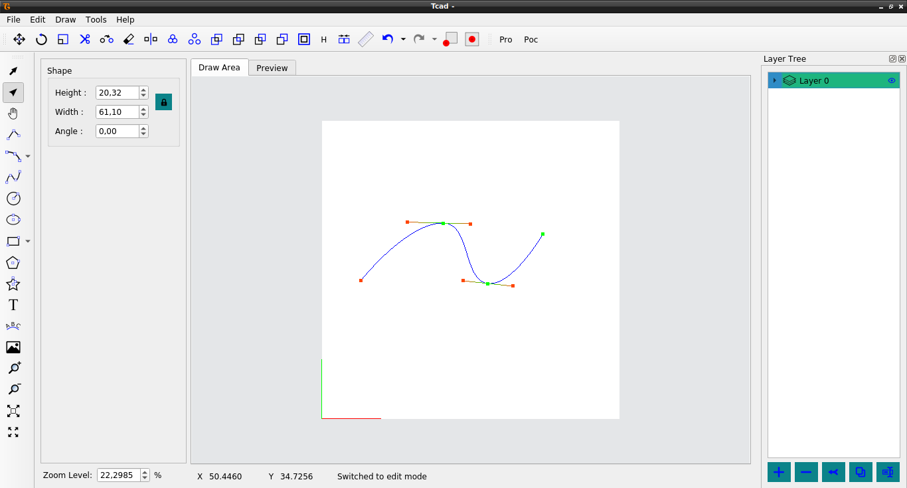 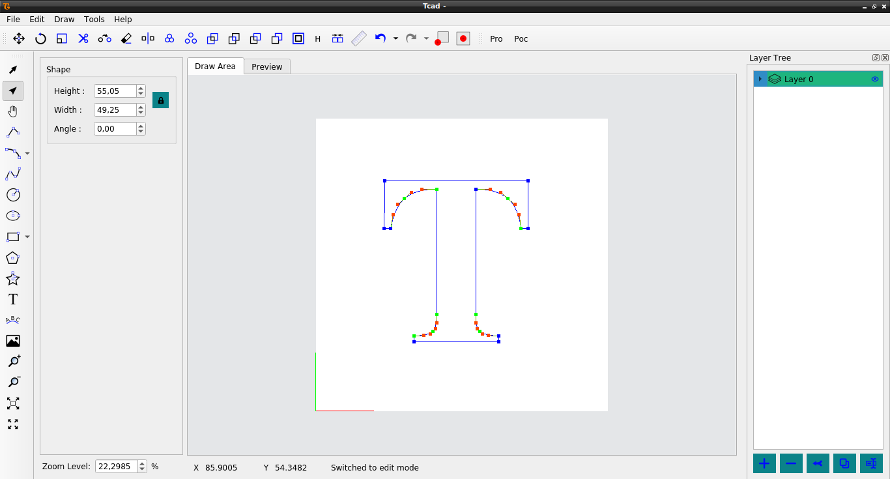 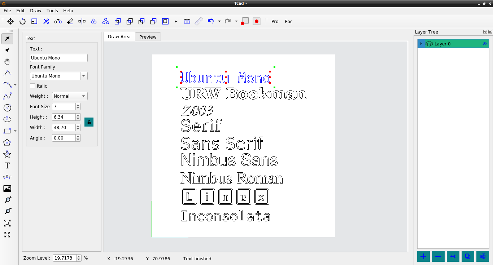 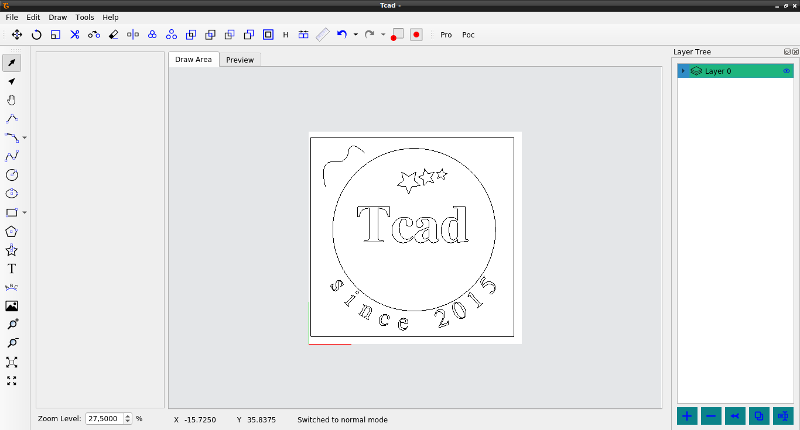 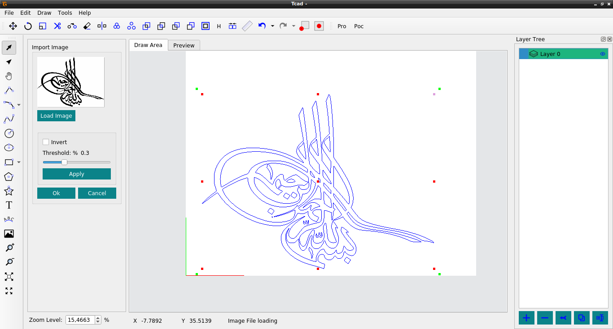 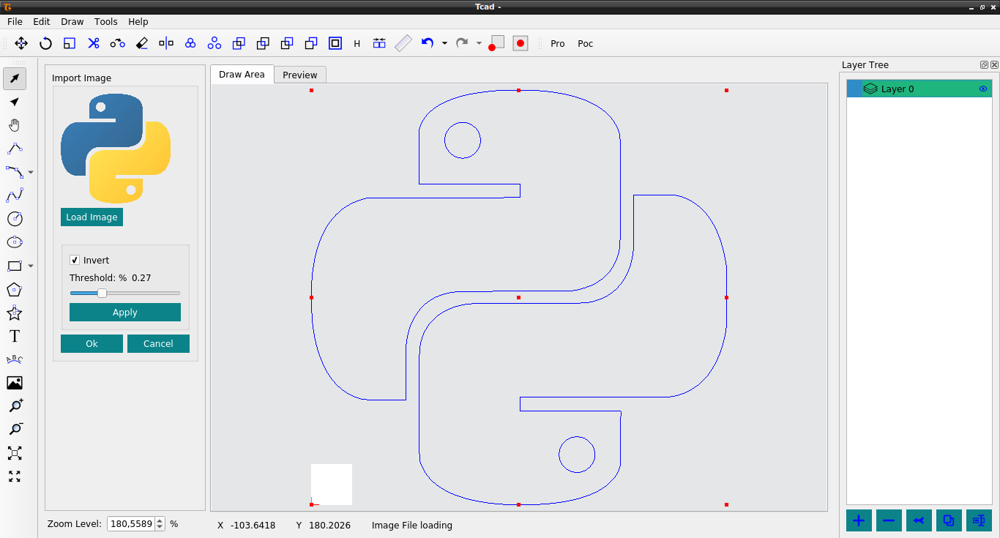 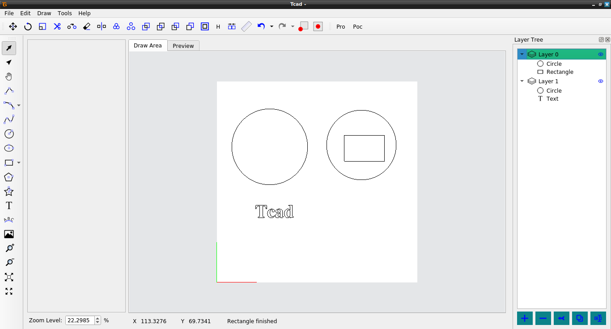 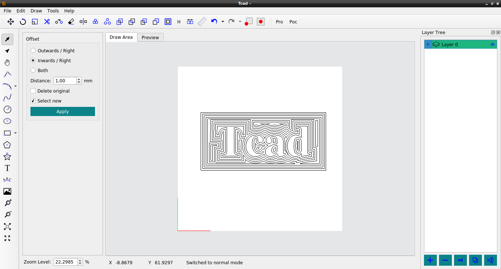 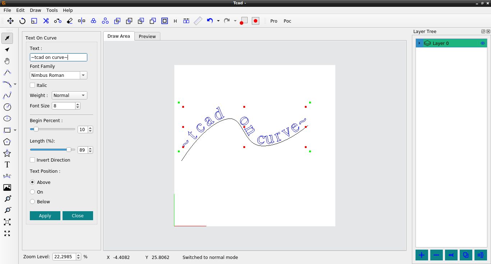 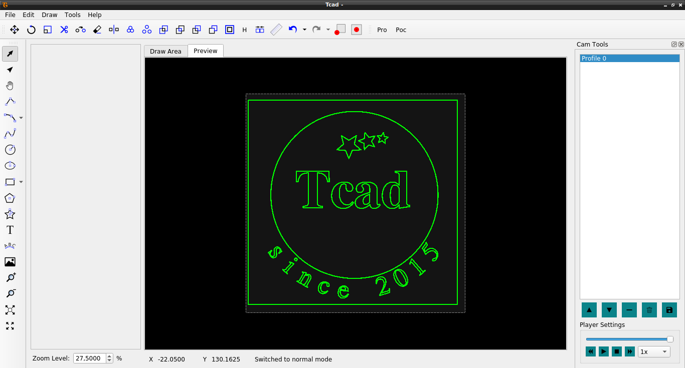 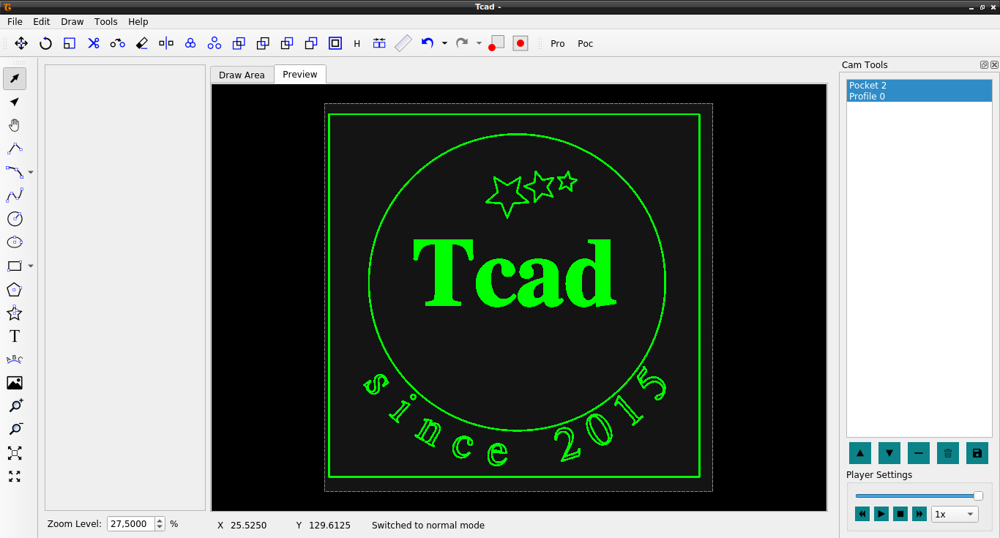
{kind=link}
{kind=link}
{kind=link}
{kind=link}
{kind=link}
{kind=link}
{kind=link}
{kind=link}
{kind=link}
{kind=link}
{kind=link}
{kind=link}
{kind=link}
Özellikler
CAD modülü
Programın sağladığı özellikler maddeler halinde listelenmiştir.
2D çizim araçları:
- çizgi
- spline
- poligon
- yıldız
- daire
- elips
- yay
- dikdortgen
- metin
Düzenleme araçları:
- Taşıma
- Döndürme
- Ölçekleme
- Trim
- Sürekli kopyalama
- Aynalama
- Gruplama
- Birleşim
- Kesişim
- Fark
- Xor
- Ofset
Ölçüm araçları:
- İki nokta arası mesafe
Resimden vektöre çevirme: jpg, png, bmp, …
İçe aktarma: DXF, SVG
Dışa aktarma: DXF, SVG
Çoklu platform desteği: linux, windows
Dil seçenekleri: İngilizce, Türkçe, diğer diller için hazır altyapı
CAM modülü
- Takım veritabanı
- Yeni takım ekleme
- Takım özellikleri (takım tipi, besleme hızı, dalma hızı…)
- İçeri/dışarı aktarma
- Takımyolu işlemleri
- Takım yolu oluşturma metodları
- profil(içeriden, üzerinden, dışarıdan)
- ofset
- Takım yolu önizlemesi(2D)
- Oluşturulan takımyollarını sıralama, silme
- Seçili takımyollarını aynı ya da ayrı dosyalara kaydetme(gcode)
- Takım yolu oluşturma metodları
Geliştiriciler
- M. Yusuf Temiz
- Resul Yaykıran
- Ömer Birler